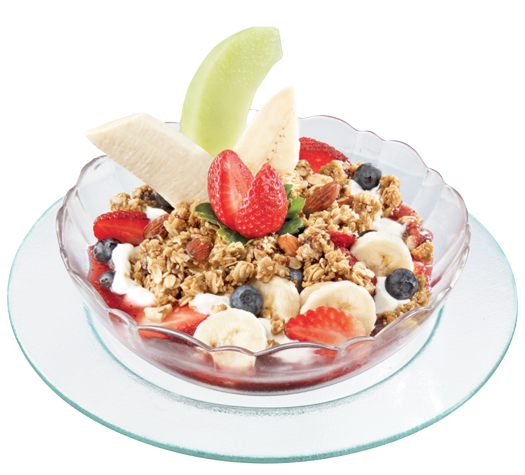

Sohel Yogurt also spelled yoghurt, yogourt or yoghourt, is a food produced by bacterial fermentation of milk. The bacteria used to make yogurt are known as yogurt cultures.


Peaches are related to plums, apricots, cherries, and almonds. They’re considered drupes or stone fruit because their flesh surrounds a shell that houses an edible seed. They can be eaten on their own or added to a variety of dishes. What’s more, peaches are nutritious and may offer an array of health benefits, including improved digestion, smoother skin, and allergy relief.
Yogurt contains some of nearly every nutrient that your body needs. It’s known for containing a lot of calcium, a mineral necessary for healthy teeth and bones. Just one cup provides 49% of your daily calcium needs (1, 2). It’s also high in B vitamins, particularly vitamin B12 and riboflavin, both of which may protect against heart disease and certain neural tube birth defects (2, 3, 4).
Peaches are related to plums, apricots, cherries, and almonds. They’re considered drupes or stone fruit because their flesh surrounds a shell that houses an edible seed. They can be eaten on their own or added to a variety of dishes. What’s more, peaches are nutritious and may offer an array of health benefits, including improved digestion, smoother skin, and allergy relief.